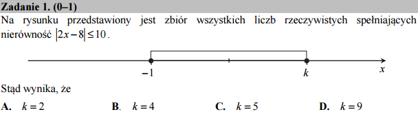

Nierówności - graficznie!¶
Poniższy kod poda nam odpowiedź:
Dla bliższego zrozumienia dlaczego, możemy narysować prawą i lewą stronę nierówności. Kiedy będzie \(|2x-8|\) mniejsze od \(10\)?
Poniższy kod poda nam odpowiedź:
Dla bliższego zrozumienia dlaczego, możemy narysować prawą i lewą stronę nierówności. Kiedy będzie \(|2x-8|\) mniejsze od \(10\)?